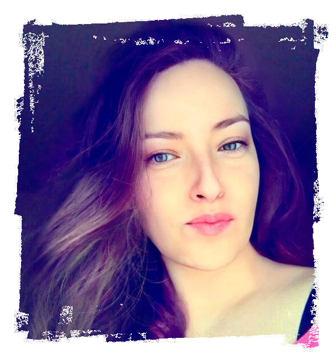

Jelena Jovic

Summary
I am a creative, communicative, dynamic, responsible and organized person, with great intellectual curiosity and constant desire to learn and acquire new skills.
Education
-
Faculty of Applied Arts and Design
- Master's Degree, Interior architecture and furniture design
- Belgrade, Serbia, 2002 - 2007
-
Fine and Applied Arts college of Professional Studies
- Bachelor's Degree, Exhibition design
- Belgrade, Serbia, 1998 - 2001
Work Experience
- Freelance interior, furniture and graphic designer
- Jelena Jovic art + design studio | Belgrade, Serbia | July 2007 - Present
- meet with clients either in person or online in order to discuss the scope of different projects
- create presentations of unique design ideas for clients
- organisation and review of all projects phases to ensure the end product is error free and finished on time
- ensure 100% customer satisfaction by direct working with a clients and giving a chance for feedback
my portfolio presentation
- Associate Professor
- Inje University | Gimhae, South Korea | June 2022 - Present
- associate advisory professor at department of architecture
Skills
- AutoCAD ⭐️⭐️⭐️⭐️⭐️
- 3d studio max ⭐️⭐️⭐️
- Sketch UP ⭐️⭐️⭐️⭐️
- Photoshop ⭐️⭐️⭐️⭐️⭐️
- Illustrator ⭐️⭐️⭐️⭐️
- Freehand illustration ⭐️⭐️⭐️⭐️⭐️
Awards
- special mention for design 2009/2010 by REFF; Rome, Italy
Contact and Other
E-mail: jelena.jovic@email.com
Portfolio presentation: jelena.portfoliobox.net
LinkdIn: Jelena Jovic
Hobbies